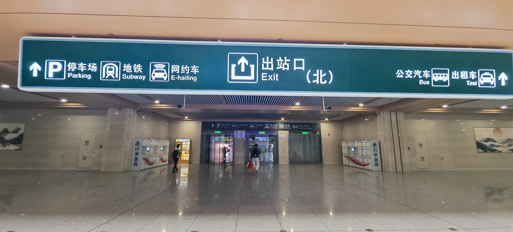
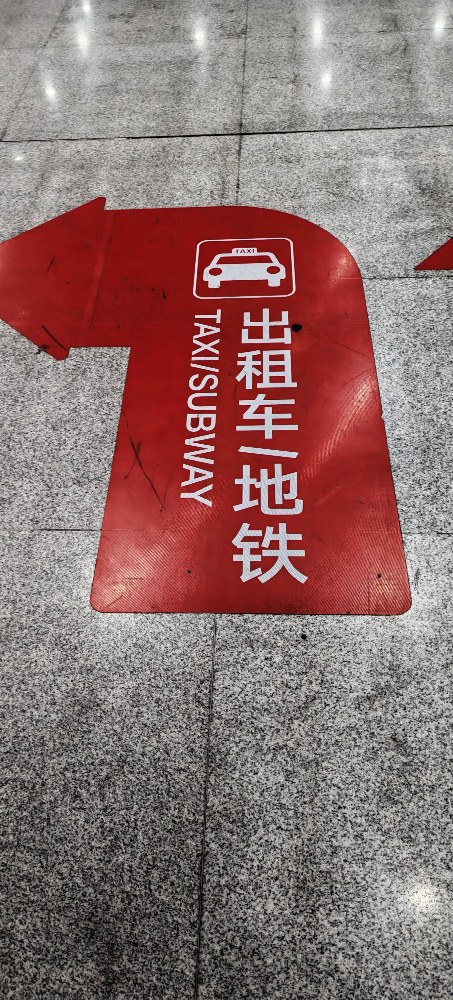
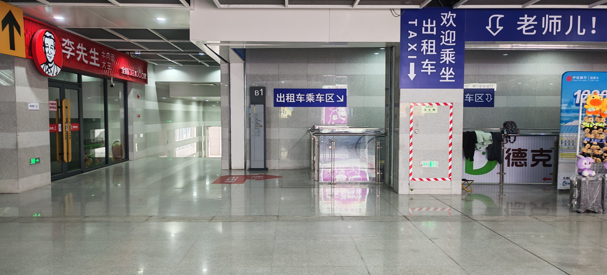
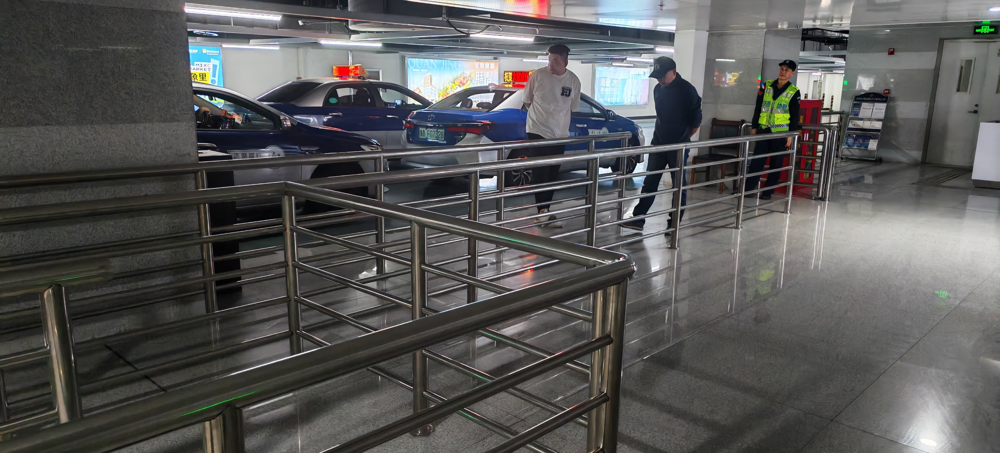
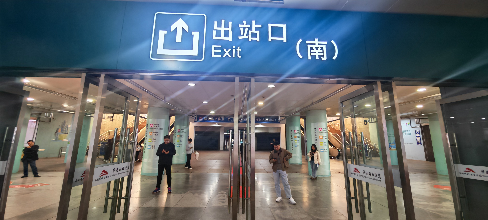
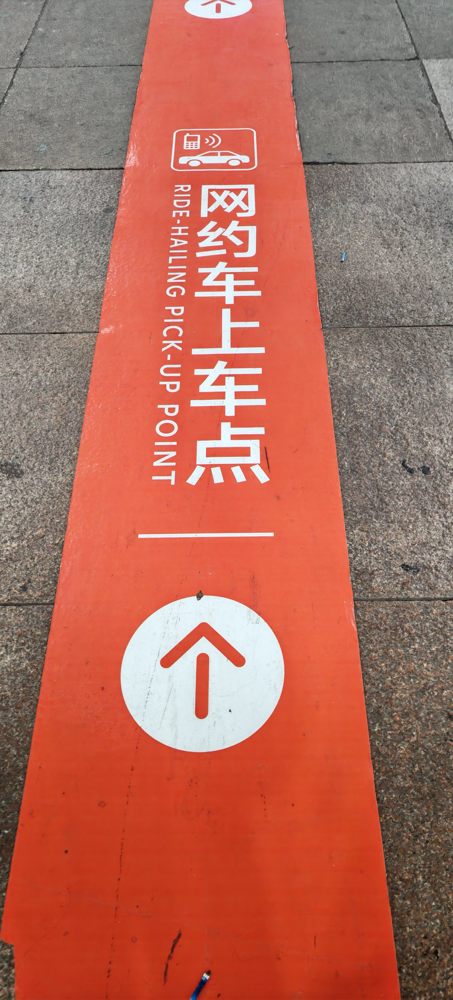
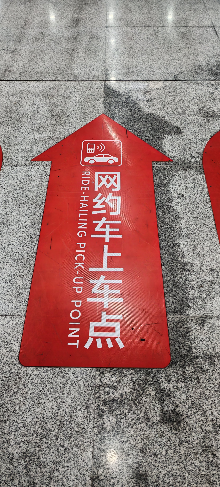
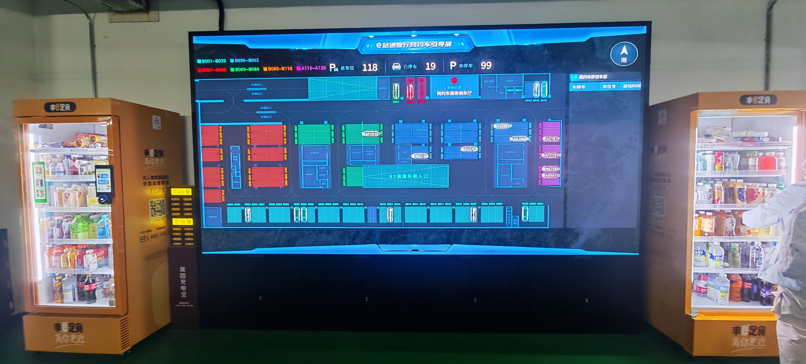
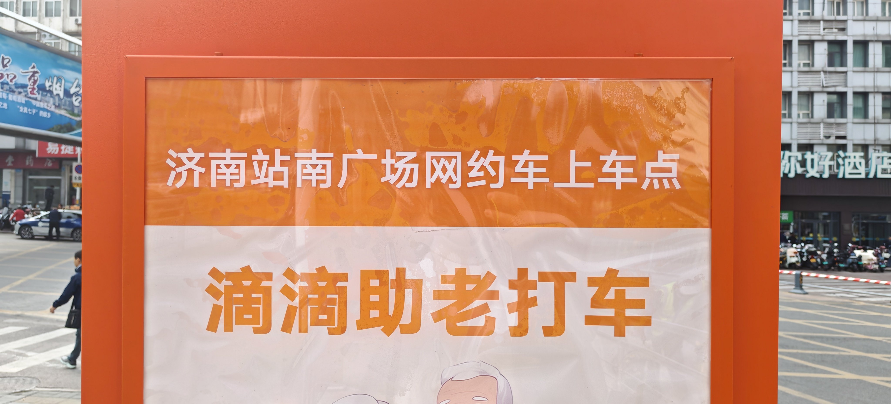
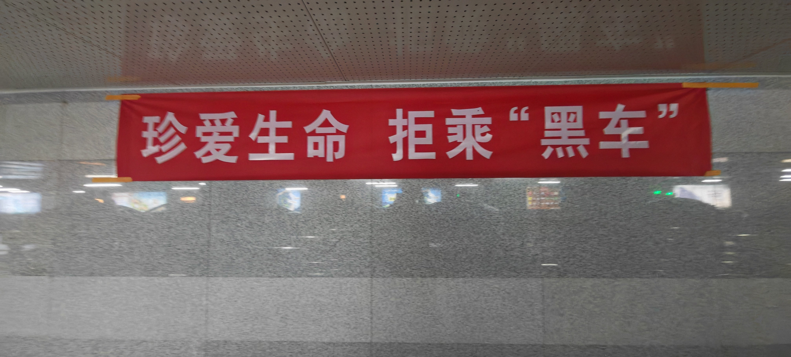

注意！济南站南北出站口内部不互通，一旦你刷票出了站，发现走错了，想从南广场去北广场（或反向），需要拖着行李绕着车站建筑走一大圈
请务必在出站前，看好下面的攻略再决定走哪个口！
出租车(北出站口专有)
优点：地下停车避免风吹日晒
1.找到出租车的专门停靠场地
2.排队上车后告知司机目的地
前往出租车停靠场地
前往出租车停靠入口
从济南站北出站口出站

济南站北出站口
跟随地面上的橙色出租车地标，前往地下车租车停车场

出租车地标

出租车停靠地入口

出租车停靠点
排队等候上车
新生报道时期人流量可能会大，出租车可能供不应求
目的地设定
详情请看《出租车/网约车目的地选择指南》
网约车（南北出站口都有，但各有优势）
南出站口网约车停靠点
优点：位于地表平台，等候区大，不拥挤
缺点：如若刮风下雨挺遭罪的
1.寻找南出站口
2.跟随橙色地标指引找到网约车候车区
3.耐心等候网约车抵达后登车入校
寻找网约车候车区
济南站南出站口（如下图所示）

济南站南出站口
跟随橙色地标指引找到网约车候车区

橙色地标
跟随橙色地标指示前往网约车候车区
南候车区入口
北出站口网约车停靠点
优点：位于地下，不受风吹日晒，有停车位实时屏幕，时刻得知网约车是否到来
缺点：地下等候区域空间并不大，开学季人有可能会很多
寻找网约车候车区
济南站北出站口（如下图所示）
济南站北出站口
跟随红色地标指引找到网约车候车区

红色地标
跟随红色地标指示前往网约车候车区
北候车区入口

北候车区实时屏幕
确定网约车等候地以及目的地
初始地
如果是在南候车区等候，那么初始地应选择“济南站南广场地面一层网约车上车点”

济南站南网约车候车区上车地
如果是在北候车区等待，那么初始地应选泽“济南站北广场地下二层网约车上车点”
济南站网约车北候车区上车地
目的地
详情请看《出租车/网约车目的地选择指南》
在出站口附近，常有司机非法揽客，请切勿理会。在非恶劣天气下，出租车队伍的移动速度很快，请耐心排队等候。
请勿轻信揽客人员的说辞，乘坐此类车辆不仅可能遇到非法运营的“黑车”，还极有可能在拥挤的车内与素不相识的陌生人强制拼车，您的乘车体验和人身财产安全均无法得到保障。
